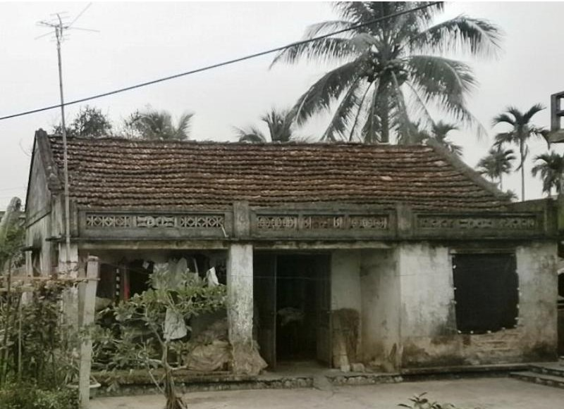

Nhìn lại chặng đường đã qua, ký ức về những buổi trưa hè chăn trâu ngoài bãi sông, những chiều tắm mát dưới dòng nước quê trong vắt không chỉ còn là hoài niệm tuổi thơ, mà đã trở thành điểm khởi nguồn cho quá trình hình thành nhân cách và lý tưởng sống của tôi. Không gian làng quê với bờ bãi, ruộng đồng, với mùi bùn non, gió sông và nhịp mùa vụ đã sớm dạy cho tôi những bài học đầu đời về lao động, về sự gắn bó giữa con người với đất đai và cộng đồng. Trong điều kiện kinh tế còn nhiều thiếu thốn, chính môi trường sống ấy đã tôi luyện sức chịu đựng, khả năng thích nghi và tinh thần tự lực – những phẩm chất theo tôi suốt cuộc đời.
Tuổi thơ gắn liền với ruộng đồng, với những ngày nắng cháy lưng trên triền đê, những buổi chiều lắng cháy da, cháy thịt lội bùn bắt cá nổi dưới ước, bắt cua ngoi lên bờ và những tối mưa rả rích bên mái nhà đơn sơ. Nhưng giữa nhọc nhằn ấy, một ước mơ âm thầm mà bền bỉ đã dần hình thành: phải học để đổi thay cuộc đời và góp phần làm điều gì đó có ích cho mảnh đất đã sinh ra mình. Đó không phải là khát vọng bộc phát, mà là kết quả của sự quan sát, chiêm nghiệm về cuộc sống quanh mình – nơi cái nghèo, sự vất vả luôn song hành với phẩm chất cần cù, nhân hậu của người dân quê.

Con đường học tập vì thế trở thành lựa chọn có ý thức. Từ mái trường làng đơn sơ, nơi điều kiện dạy và học còn nhiều hạn chế, tôi cùng bạn bè chung trang lứa đã san sẻ cho nhau từng quyển vở, từng chiếc bút, nâng đỡ nhau bằng tinh thần hiếu học và tình bạn trong sáng. Những năm tháng ấy cho tôi hiểu rằng, tri thức không chỉ đến từ sách vở, mà còn được bồi đắp từ sự đồng cảm, sẻ chia và ý thức vươn lên của cả một tập thể. Chính môi trường học đường nghèo khó nhưng giàu tình người ấy đã đặt nền móng cho nhận thức xã hội và trách nhiệm công dân trong tôi.
Năm 1992, khi nhận được giấy báo trúng tuyển Trường THPT Bạch Đằng, niềm vui không chỉ là thành quả của nỗ lực cá nhân, mà còn là sự khẳng định cho niềm tin của gia đình, thầy cô và cộng đồng quê hương. Tôi bước vào bậc trung học phổ thông với ý thức rõ ràng hơn về trách nhiệm của người đi học trong một gia đình nông thôn còn nhiều khó khăn. Ba năm cấp ba là giai đoạn tôi vừa học tập, vừa lao động phụ giúp gia đình, phải tự cân đối giữa thời gian, sức lực và khát vọng. Chiếc xe đạp cũ trên những con đường làng còn đầy bùn đất, những lối mòn hằn vết đã sâu trũng và bên ngọn đèn dầu leo lét trong đêm không chỉ là phương tiện sinh hoạt, mà còn là biểu tượng của ý chí tự học, của kỷ luật bản thân và niềm tin vào giá trị lâu dài của tri thức.
Trong bối cảnh ấy, tình bạn học đường có ý nghĩa đặc biệt. Chúng tôi chờ nhau nơi đầu ngõ, cùng đạp xe đến trường, cùng ôn bài dưới ánh đèn mờ, động viên nhau vượt qua những thời điểm tưởng chừng không thể tiếp tục. Tình bạn không chỉ giúp chúng tôi chia sẻ khó khăn vật chất, mà còn tạo nên một không gian tinh thần lành mạnh, nơi mỗi người được khích lệ để không buông bỏ mục tiêu học tập. Nhìn lại, tôi nhận ra đó chính là một dạng “vốn xã hội” quý giá, góp phần duy trì động lực và định hướng giá trị cho mỗi cá nhân.
Năm 1995, sau khi tốt nghiệp phổ thông, hoàn cảnh gia đình chưa cho phép tôi tiếp tục con đường học vấn chính quy. Quyết định gác lại ước mơ đại học để trở về quê làm lao động tự do là một bước ngoặt lớn, mang theo nhiều trăn trở và day dứt. Tuy nhiên, đó cũng là lựa chọn mang tính trách nhiệm, phản ánh ý thức đặt lợi ích gia đình và thực tiễn cuộc sống lên trên khát vọng cá nhân trước mắt. Tôi bước vào đời bằng chính sức lao động của mình, chấp nhận mọi công việc được thuê mướn, từ cuốc đất, vác bao đến đội đá, làm thuê theo mùa vụ.
Những năm tháng lao động nặng nhọc ấy trở thành một “trường học thực tiễn” không giáo trình, nhưng giàu bài học. Lao động giúp tôi hiểu sâu sắc giá trị của mồ hôi, của kỷ luật và của sự bền bỉ. Quan trọng hơn, nó giúp tôi nhận thức rõ mối quan hệ giữa cá nhân và xã hội, giữa trách nhiệm bản thân và sự vận hành chung của cộng đồng. Trong giai đoạn này, sự động viên, thăm hỏi của bạn bè cũ vẫn là nguồn lực tinh thần quan trọng, khẳng định rằng tình bạn học trò không kết thúc khi rời ghế nhà trường, mà tiếp tục đồng hành trong những khúc quanh của cuộc sống.
Từ góc nhìn của hiện tại, tôi nhận thấy quá trình trưởng thành của bản thân là kết quả của sự tương tác lâu dài giữa hoàn cảnh kinh tế – xã hội, môi trường giáo dục và mạng lưới quan hệ con người. Những năm tháng lam lũ không làm phai nhạt ước mơ ban đầu, mà trái lại còn giúp tôi tái định hình nó theo hướng chín chắn, thực tế và gắn bó hơn với lợi ích chung. Ước mơ học tập và cống hiến vì quê hương vì thế không chỉ là khát vọng cá nhân, mà dần trở thành một định hướng giá trị mang tính chính luận: tri thức phải gắn với lao động, với đời sống và với trách nhiệm xã hội.
Vì vậy, không chỉ là câu chuyện riêng của một cá nhân xuất thân từ làng quê, mà còn là sự chiêm nghiệm về con đường đi lên của con người trong những điều kiện còn nhiều khó khăn. Từ bãi sông quê nghèo khó nhưng giàu nghĩa tình, tôi tin rằng mỗi nỗ lực học tập, mỗi giọt mồ hôi lao động đều góp phần tạo nên nền tảng cho sự đổi thay bền vững. Và chính từ những trải nghiệm đó, tôi luôn tâm niệm rằng: chỉ khi tri thức được đặt trong mối quan hệ hữu cơ với thực tiễn và trách nhiệm cộng đồng, nó mới thực sự phát huy giá trị lâu dài đối với cá nhân và xã hội.